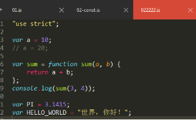
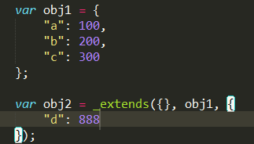
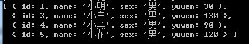

原文连接:https://www.cnblogs.com/rope/p/10729568.html
一、ES版本简介和调试运行方法
1.1 ECMAScript简介
MDN手册：https://developer.mozilla.org/zh-CN/docs/Web/JavaScript
JavaScript 的标准是 ECMAScript。截至 2012 年，所有的现代浏览器都完整了支持 ECMAScript 5.1。旧式的浏览器至少支持 ECMAScript 3 标准。
2015年6月17日，ECMA国际组织发布了 ECMAScript 6.0，该版本正式名称为ECMAScript 2015，是“JavaScript 语言的下一代标准”。但通常被称为 ECMAScript 6或ES6。它的目标，是使得 JavaScript 语言可以用来编写复杂的大型应用程序，成为企业级开发语言。本文档目前覆盖了最新ECMAScript的草案，也就是ECMAScript2018。
ES是ECMAScript的简称。是JavaScript执行标准的制定者。
ES6 也称为ES2015 全称是ECMAScript2015
ES7 也称为ES2016 全称是ECMAScript2016
ES8 也称为ES2017 全称是ECMAScript2017
ES9 也称为ES2018 全称是ECMAScript2018
从 ES6开始ECMA组织每年发布一个版本，以年份作为名称，因此又称ECMAScript 2017，简称 ES2017。
大家基本上记不住哪个版本的ES更新了什么，所以统称为ENV（ECMAScript New Version）。
1.2 ECMAScript和JavaScript的关系
一个常见的问题是，ECMAScript 和 JavaScript 到底是什么关系？
讲清楚这个问题，需要回顾历史。1996年11月，JavaScript的创造者Netscape公司，决定将 JavaScript提交给标准化组织ECMA，希望这种语言能够成为国际标准。次年，ECMA发布262号标准文件（ECMA-262）的第一版，规定了浏览器脚本语言的标准，并将这种语言称为ECMAScript，这个版本就是1.0版。
该标准从一开始就是针对JavaScript语言制定的，但是之所以不叫JavaScript，有两个原因。一是商标，Java是Sun公司的商标，根据授权协议，只有Netscape公司可以合法地使用 JavaScript这个名字，且 JavaScript本身也已经被 Netscape 公司注册为商标。二是想体现这门语言的制定者是ECMA，不是 Netscape，这样有利于保证这门语言的开放性和中立性。
因此，ECMAScript和JavaScript的关系是，前者是后者的标准，后者是前者的一种实现。日常场合，这两个词是可以互换的。
关于更多ECMAScript请阅读：http://es6.ruanyifeng.com/#docs/intro
1.3浏览器兼容性
浏览器和NodeJS对ES6新语法特性的支持，要看兼容性。各大浏览器的最新版本，对 ES6 的支持可以查看：
http://kangax.github.io/compat-table/es6/
随着时间的推移，支持度已经越来越高了，超过 90%的 ES6 语法特性都实现了。
Node 是 JavaScript 的服务器运行环境（runtime），它对 ES6的支持度更高。
访问http://ruanyf.github.io/es-checker可以查看当前浏览器的支持ES6的程度
ES-Checker这个工具，可以用来检查你当前Node支持ES6的程度
运行下面的命令，可以查看你在使用的Node环境对ES6的支持程度
$ npm install -g es-Checker
$ es-checkerNodejs现在的最高版本是10，随着版本的升级，实际上Nodejs本身比如http、fs模块等几乎没什么更新，变化就是对ES的新语法支持，Nodejs 6最高版本，几乎全部支持了常用的新版ES语法。
在浏览器和node环境都可以运行，但是有很多旧版浏览器尚未支持。
高级浏览器开始逐步支持ES6、7、8这些新特性，比如写一个“自动解构”语法：
const [a,b,c] = [1,2,3];
console.log(a)
console.log(b)
console.log(c)二、Babel翻译器
由于浏览器的版本和兼容性问题，很多JavaScript的新的方法都不能使用，等到可以大胆使用的时候，可能已经过去了好几年。Babel就因此而生，它可以让你放心使用大部分的JavaScript的新的标准的方法，然后编译成兼容绝大多数的主流浏览器的代码。
Babel是一个广泛使用的ES6转码器，可以将ES6代码转为ES5代码，从而在现有环境执行。这意味着，你可以用 ES6 的方式编写程序，又不用担心现有环境是否支持。
中文官网：https://babeljs.cn
2.1 babel安装
Babel是我们学习的第一个前端工作流工具，它是一个JavaScript编译器，能将ES6、7、8的代码翻译成IE8能够识别的ES5语法。
l 什么是前端工作流工具？
用Nodejs编写的，用npm发布的，一些开发人员在开发的时候能够运行的便利工具。
安装babel工作流工具：
npm install -g babel-clibabel提供babel-cli工具，用于命令行转换，-g安装之后的程序并不是属于某一个单独的项目，而是操作系统的全局。CLI表示Command Line Interface，命令行接口，就是用CMD能够调用这个命令。
安装完毕后，用命令查看版本是否安装成功
babel --version
在项目文件夹中打开CMD命令行窗口，输入：
babel 01.js -o a.js-o表示output输出，这条语句能将01.js翻译为a.js
但是发现，并没有将ES6语法翻译成ES5语法：
|
|
|
因为我们没有告诉babel，让它去帮我们翻译ES6语法，怎么指导它翻译？
接下来需要配置对应的.babelrc文件才可以发挥完整的作用。
2.2 .babelrc文件preset
必须使用.babelrc文件去指导babel工作。
windows系统不允许用户创建“.”开头的文件
方法1：用sublime可以新建。
方法2：打开cmd窗口，输入一下命令将a.txt文件重命名为.babelrc
rename a.txt .babelrc
预设（presets）
该文件用来设置转码规则和插件，使用的时候需要安装对应的插件，并且写一些配置：
{
"presets":["es2015","es2016"]
}用presets设定转码规则，就是说babel要翻译哪些语法，我们一般翻译es2015、es2016写在数组中。
env表示ECMAScript New Version，就是新的版本ES语法：
{
"presets":["env"]
}
接下需要安装语法依赖：
npm install --save-dev babel-preset-es2015
npm install --save-dev babel-preset-es2016--save-dev表示添加“开发依赖”，--save表示添加“运行依赖”，开发时需要babel翻译，运行时babel已经翻译好了，运行就不需要babel了，所以--save-dev是开发才需要的。
安装完插件后，就可以再次使用babel翻译
babel 01.js -o a.js|
翻译前：
|
翻译后：
|
Babel的配置和使用总流程：
presets字段设定转码规则，官方提供以下的规则集，你可以根据需要安装。
最新转码规则：
$ npm install --save-dev babel-preset-latest
不同阶段语法提案的转码规则（共有4个阶段），选装一个：
$ npm install --save-dev babel-preset-stage-0
$ npm install --save-dev babel-preset-stage-1
$ npm install --save-dev babel-preset-stage-2
$ npm install --save-dev babel-preset-stage-3
然后，将这些规则加入.babelrc文件。
{
"presets": [
"latest",
"react",
"stage-2"
],
"plugins": []
}上面这些代码是在全局环境下，进行Babel转码。这意味着，如果项目要运行，全局环境必须有安装Babel，也就是说项目产生了对环境的依赖。另一方面，这样做也无法支持不同项目使用不同版本的Babel。
所以，虽然在你的机器上全局安装 Babel CLI, 但根据单个项目进行本地安装会更好一些。
这样做有两个主要的原因：
同一机器上的不同项目可以依赖不同版本的 Babel, 这允许你一次更新一个项目。
这意味着在你的工作环境中没有隐含的依赖项。它将使你的项目更方便移植、更易于安装。
解决办法是将babel-cli安装在项目中，通过以下命令本地安装Babel CLI到项目依赖:
npm install --save-dev babel-cli更多请阅读：
http://www.ruanyifeng.com/blog/2016/01/babel.html
三、const和let
开始学习ES6、7、8的语法精粹。
更多的去看：http://es6.ruanyifeng.com/
3.1 const
const用来定义常量，所谓的常量就是值一旦给定后就不变，一次定义终身不变的量。
const a = 10;
a = 20;上面的a就是常量，如果给a重新赋值，会报错。
const通常会定义两种值
l 定义函数
const sum = function(a,b){
return a + b;
}
console.log(sum(3,4))
l 定义一些特定的字符串和常数
const PI = 3.14;
const HELLO_WORLD = "世界，你好";常量名一般全是大写，如果由多个单词组成，用下划线隔开，暗示这个是常量。
3.2 let
let用来定义块级作用域的变量，只要有“{}”包裹，就表示块级作用域。
注意：不是JSON，if语句体、函数、while、for是块，for循环的()部分也是块级。
{
var a = 10;
}
console.log(a); //10
var这个定义的变量是函数级作用域，不是块级作用域。
{
let a = 10;
}
console.log(a); //报错 a is not defined
注意：通常在for循环使用let，此时循环体中自动加了闭包：
for(let i = 0;i < 10;i++){
}
console.log(i);//报错
看一个面试题：
var arr = [];
for(var i = 0; i < 10;i++){
arr.push(function(){
console.log(i)
})
}
console.log(arr)
arr[4]();数组中存储了10个函数，当我们任意调用时，比如arr[4]()函数，会输出10.
因为函数调用时，i已经变成10了，i其实是一根全局变量，要使用IIFE执行函数：
var arr = [];
for(var i = 0; i < 10;i++){
(function(a){
arr.push(function(){
console.log(a)
})
})(i);
}
console.log(arr)
arr[4]();
现在用let，非常简单：
var arr = [];
for(let i = 0; i < 10;i++){
arr.push(function(){
console.log(i)
})
}
console.log(arr)
arr[4]();let和for是绝配，let平时没啥用。
总结：
l const用来定义常量，通常定义函数和常数
l let用来定义{}块级的作用域的变量，通常用来定义for循环的变量
常量是块级作用域，很像使用let，语句定义的变量，常量的值不能通过重新赋值来改变，并且不能重新声明。
let和const的疑点等面试题再加，比如：
console.log(m);
let m = 10; //报错，let没有变量声明提升3.3 Babel的翻译结果
对于const。babel会翻译var，但是翻译的时候，会验证const是否重新赋值了，是就报错。
|
翻译前：
|
翻译后： 
|
for循环的翻译：
|
翻译前：
|
翻译后：
|
四、变量的解构赋值
ES6 允许按照一定模式，从数组和对象中提取值，给变量进行赋值，这被称为解构。
解构的作用是可以快速取得数组或对象中的元素或属性，而无需使用arr[x]或obj[key]等传统方式去赋值。
以前为变量赋值，只能直接指定值：
var a = 1;
var b = 2;
var c = 3;4.1数组解构
所谓的解构就是一个快速给数组或者对象中的值，快速传入变量的方法。
数组可以解构，当等号右侧是数组的时候，等于左侧可以将变量装入[]中接收，一一对应接收。
var [a,b,c] = [1,2,3];
console.log(a); //1
console.log(b); //2
console.log(c); //3上面代码表示，可以从数组中提取值，按照对应位置，给变量赋值。
本质上，这种写法属于“模式匹配”，只要等号两边的模式相同，左边的变量就会被赋予对应的值。
如果数组较为复杂，此时左侧结构的那项变量，也有相同的结构
var [a,b,[c,d]] = [1,2, [3,4]];
console.log(a); //1
console.log(b); //2
console.log(c); //3
console.log(d); //4var [a,b,c] = [1,2, [3,4]];
console.log(a); //1
console.log(b); //2
console.log(c); //[3,4]
下面是一些嵌套数组进行解构的例子：
let [x, ,y] = [1, 2, 3];
console.log(x) // 1
console.log(y) // 3如果解构不成功，变量的值等于undefined
let [a] = [];
let [b,c] = [1];
console.log(a); //undefined
console.log(b); //1
console.log(c); //undefined
另一种情况是不完全解构，即等号左边的模式，只匹配一部分的等于右边的数组，这种情况：
let [a,[b],c] = [1,[2,3],4];
console.log(a); //1
console.log(b); //2
console.log(c); //44.2对象解构
对象的结构和数组有个不同点，数组的元素是按照顺序排列，变量的取值由它的位置决定。
而对象的属性没有顺序，但是变量必须与属性同名，才能取到正确的值。
var {name,id,sex} = {"id":1001, "name":"小明", "sex":"男"};
console.log(id)
console.log(name)
console.log(sex)上面的例子，等号左边的变量顺序和等号右边3个同名属性的顺序不一样，但取值没有影响。
如果变量名和属性名不一致，必须写成下面这样：
var {name:names, id:ids, sex: sexs} = {id:1001, name:"小明", sex:"男"};
console.log(ids)
console.log(names)
console.log(sexs)实际上说明，对象的解构赋值是上面形式的简写。
上面代码中name是匹配模式，names才是变量，真正被赋值的是names，而不是names。也就是说，对象解构赋值的内部机制，是先找到同名属性，然后再赋值给对应的变量，真正被赋值的是后者。
4.3默认值
解构赋值允许指定默认值。
let [a = 100] = [];
let [x, y = 200] = [100]
console.log(a); //100
console.log(x); //100
console.log(y); //200注意：ES6内部使用严格相等运算符（===），判断一个位置是否有值，所以只有当一个数组成员严格等于undefined，默认值才会生效。
let [a = 88] = [undefined]
let [b = 88] = [null]
console.log(a); //88
console.log(b); //null上面代码中有一个数组成员是null，默认值就不生效，因为null不严格等于undefined。
更多解构的知识点阅读：http://es6.ruanyifeng.com/#docs/destructuring
字符串也可以解构赋值。这是因为此时，字符串被转换成了一个类似数组的对象。
const [a, b, c, d, e] = 'hello';
console.log(a) // "h"
console.log(b) // "e"
console.log(c) // "l"
console.log(d) // "l"
console.log(e) // "o"4.4扩展运算符（spread operator）
扩展运算符（spread）是三个点（...）。将一个数组转为用逗号分隔的参数序列，还能强制展开一个对象，通常用于对象的赋值，使用灵活广泛。
l 第一个作用：称为“展开运算符”，作用和字母意思用于，就是把东西展开，可以用在数组和对象上。
var obj1 = {
a : 100,
b : 200,
c : 300
}
var obj2 = {
...obj1,
d : 888
}
console.log(obj1)
console.log(obj2)
console.log(obj1 === obj2);
数组也可以强制展开，通常数组的赋值，比如有两个数组合并成一个数组：
var arr1 = ["小白","小黑","白无常","黑无常"];
var arr2 = ["小明","小红","小花","小刚"];
var arr = [...arr1, ...arr2];
console.log(arr);
原来想把一个数组打散传入到函数中作为参数，通常用apply：
function sum(a,b,c,d){
return a+b+c+d;
}
var arr = [1,2,3,4];
console.log(sum.apply(null, arr)); //10
可以用...运算符，将数组强制展开为一个散列的形式
function sum(a,b,c,d){
return a+b+c+d;
}
var arr = [1,2,3,4];
console.log(sum(...arr)); //104.5剩余操作符（rest operator）
第二、三个作用：叫“剩余操作符”是解构的一种，意思是把剩余的参数放到一个数组或对象中赋值给它。一般针对数组或对象。
注意“...”只能出现最后一个参数，并且通过这个例子发现...能将零散的值收纳为数组。
var [a,b, ...c] = [1,2,3,4,5,6];
console.log(a);
console.log(b);
console.log(c);
逻辑上“...”是一个运算符
console.log(...[1,2,3,4])通过这个实验发现，“...”能将数组打散为零散值。
应用场景1：当写Ajax时，参数是JSON，此时可以直接将JSON解构
JSON：
{"a":100,"b":200,"c":300}
传统方法接收：
$.get("data/1.json", function(data){
console.log(data.a)
console.log(data.b)
console.log(data.c)
})
ES6的解构语法接收数据：
$.get("data/1.json", function({a,b,c}){
console.log(a)
console.log(b)
console.log(c)
})
补充个知识点，在ES6中当一个对象的k和v一致时，可以省略v。
var a = 10;
var obj = {
a,
b : 20,
c : 30,
}
console.log(obj); //{ a: 10, b: 20, c: 30 }
应用场景2：
以后函数大概率都是接收一个JSON当参数，并且用ES6解构语法写形参
调用函数的时候传的参数，一般都是k:v，一直省略v
var name = "小明";
var height = 170;
var weight = 100;
function buy({name,weight,height}){
console.log(name)
console.log(height)
console.log(weight)
}
// buy({name:"小明", height:170, weight:100});
// buy({name:name, height:height, weight:weight});
buy({name, height, weight});红色部分的语句是在创建JSON，绿色的部分是在进行结构。
调用函数时参数顺序打乱也不影响结构，因为解构，会自动匹配key。
应用场景3
有一个数组arr1，在不改变arr1数组情况下，想往arr1数组前面加一项作为arr2新数组。
var arr1 = [8,9,10,11,12];
var arr2 = [...arr1, 13];
var arr3 = [7, ...arr1];
console.log(arr1)
console.log(arr2)
console.log(arr3)
扩展运算符和剩余操作符的区别
简单的说，在某种程度上，剩余操作符和扩展运算符相反，扩展运算符会“展开”数组变成多个元素，剩余操作符会收集多个零散元素合并成一个元素。
4.6对象解构的翻译问题
注意：babel会将“[]”和“{}”解构变为一个个的var。
|
数组解构翻译前 |
数组解构翻译后 |
|
|
|
但是babel不能翻译“对象解构”，只能翻译数组解构：
原因：object-rest-spread 还处于stage阶段（属于实验性属性）。
解决方法：安装babel插件transform-rest-spread，放到.babelrc文件配置上，即可使用。
{
"presets":["es2015","es2016"],
"plugins":["transform-object-rest-spread"]
}.babelrc的presets是用来定义预设，plugins定义插件。
安装依赖：
npm install babel-plugin-transform-object-rest-spread --save-dev此时，babel就可以翻译对象解构了。
|
对象翻译前 |
对象翻译后 |
|
|

|

变量的解构赋值用途很多。
五、ES6语法
ES6中对数组新增了几个函数：map()、filter()、reduce()
ES5新增的forEach()。
都是一些语法糖。
5.1 forEach()遍历数组
forEach()方法用来循环遍历数组，方法中的function回调函数接收3个参数
参数1是遍历的数组内容(item)；参数2是对应的数组索引(index)，参数3是是数组本身(array)。
[].forEach(function(item,index,array){
...
})var arr = ["白板","幺鸡","红中","发财","八万"];
arr.forEach(function(item,index,array){
console.log(item,index,array)
})
forEach函数没有返回值
for今后是创建数组，遍历或操作数组可以交给forEach方法。
5.2 map()映射
map方法的作用，“映射”也就是原数组被“映射”成对应的新数组。
[].map(function(item,index,array){
...
})var arr = ["白板","幺鸡","红中","发财","八万"];
arr.map(function(item,index,array){
console.log(item,index,array)
})
写一个案例：比如创建一个新数组，每一项都是原数组值的两倍
var arr = [10,20,30,40,50,99];
var newArr = arr.map(function(item,index,array){
return item * 2; //返回一个新的结果，给变量接收，原数组不变
});
console.log(arr)
console.log(newArr);
map函数的本质是依次遍历原数组的每一项，将每一项都执行一遍函数中的语句，返回一个新的数组。
注意：
l 函数需要有return值，如果没有，数组所有项都被映射成undefined。
l map返回的数组一定和原数组的长度一样。
在实际使用时，可以利用map()方便获取对象数组中的特定属性值们，例如下面例子：
var user = [
{name:"小明","email":"xiaoming@qq.com"},
{name:"小红","email":"xiaohong@qq.com"},
{name:"小刚","email":"xiaogang@qq.com"}
]
var emails = user.map(function(item,index,array){
return item.email;
})
console.log(emails.join(","))5.3 filter()过滤
filter为“过滤、筛选”之意，指原数组中filter某些项后，返回过滤后的新数组，用法和map相似。
比如想从原数组中，挑选所有的偶数，返回新的数组。
var arr = [312,55,77,11,13,15,18,26,30,40,50,99];
var newArr = arr.filter(function(item,index,array){
return item % 2 == 0;
});
console.log(arr)
console.log(newArr)描述：arr中的每一项会依次的执行函数，filter的callback函数需要返回布尔值true或false。true则将值返回到新数组中，false无情地将你抛弃…
再比如，从数组中选择及格的学生：
var arr1 = [
{name:"小明","chengji":50},
{name:"小红","chengji":70},
{name:"小黑","chengji":56},
{name:"小刚","chengji":88}
]
// var arr2 = arr1.filter(function(item){
// return item.chengji >= 60;
// });
// var arr2 = arr1.filter((item)=>{
// return item.chengji >= 60;
// });
// var arr2 = arr1.filter(item=>{
// return item.chengji >= 60;
// });
var arr2 = arr1.filter(item => item.chengji >= 60;);
console.log(arr1)
console.log(arr2)filter和map相同点：都会遍历数组的每一项
filter和map不同点：map返回数组不会少项，filter可能少项。
5.4 reduce()迭代
reduce中文意思是“减少”、“约简”，不过从功能来看，是无法与“减少”这种含义联系起来的，反而更接近于“迭代”、“递归（recursion）”
arr.reduce(callback,[initialValue])第一个参数的callback回调函数有四个参数，第二个为设定的初始值（可选）。
callback函数有四个参数：
previous ：上一次叠加的结果值或初始值
current ： 当前会参与叠加的项
index ：当前值的下标
array ：原数组本身
var arr = ["白板","幺鸡","红中","发财","三饼"];
arr.reduce(function(prev,cur,index,array){
console.log(prev,cur)
})reduce的原理：从下标为1的项开始遍历，每次return的值将作为下一项的prev值，这一次的遍历是cur，prev会有累加的感觉。
案例1：求数组的总和：
var arr = [3,4,5,6];
var sum = arr.reduce(function(prev, cur){
console.log(prev); //3、7、12、18
// console.log(cur); //4,5,6
return prev + cur;
})
console.log(sum);//18
求数组的最大值【经典面试题】：
var arr = [43,5,4,6,888,78,554,5,6];
// var max = Math.max.apply(null,arr);
var max = arr.reduce(function(a, b){
console.log(a); //43、43、43、43、888、888、888...
// console.log(b);
return a > b ? a : b;
})
console.log(max);reduce可以设置初始参数（参数自定义），下标从0开始遍历。
求文科状元是谁？
var arr = [
{id:1,name:"小明",sex:"男",yuwen:30},
{id:2,name:"小红",sex:"女",yuwen:60},
{id:3,name:"小白",sex:"男",yuwen:130},
{id:4,name:"小黑",sex:"男",yuwen:90},
{id:5,name:"小花",sex:"男",yuwen:120}
]
var newArr = arr.reduce(function(a,b){
return a.yuwen > b.yuwen ? a : b;
})
console.log(newArr)
要求最高分：
reduce可以设置初始参数（参数自定义），当reduce有第二个参数时，此时reduce遍历将从第0项开始遍历，而不是第1项开始。
var newArr = arr.reduce(function(a,b){
console.log(a); //0
return b.yuwen > a ? b.yuwen : a;
}, 0); //初始值是0
console.log(newArr)5.5用途-写纯函数
上面的四大数组方法：map、filter、reduce特别有用，做“函数式”编程。
什么是“函数式（兰姆达式编程）”编程？
所有的函数都是纯函数的时候，此时就是函数式编程。
什么是纯函数？
纯函数是指不依赖于且不改变它作用域之外的变量状态的函数。
l 这个函数内部不改变传入的参数。
l 传入这个函数一定有参数，一定会返回某一个确定的值。
l 函数中的语句，不能有随机性，比如Math.random()、new Date()，传入的参数相同，返回的值必定相同；
l 这个函数里面不能有任何异步语句，比如$.get()、fs.readFile()、setInterval()
一定要好好学纯函数，因为react、vue都是纯函数（兰姆达）式编程。
【例子1】请写一个纯函数addItem()，接收arr、n当做参数，能够在arr的尾部增加n。
错误的例子：
var arr = [99,88,77];
function addItem(arr,n){
arr.push(n);
}
addItem(arr, 66)
console.log(arr);//arr被改变了，addItem不是纯函数我们绝对不能改变传入的参数的值。
正确写法：
var arr = [99,88,77];
function addItem(arr,n){
return [...arr, n];
}
var arr2 = addItem(arr, 66); //返回一个新数组
console.log(arr); //原数组不变
console.log(arr2);
【例子2】请写一个纯函数addItem()，接收arr、n当做参数，能够在arr的头部增加n。
var arr = [99,88,77];
function addItem(arr,n){
return [n,...arr];
}
var arr2 = addItem(arr, 66); //返回一个新数组
console.log(arr); //原数组不变
console.log(arr2);
【例子3】请写一个纯函数removeItem()，接收arr、n当做参数，能够将arr第下标为n的那项删除。
var arr = ["白板","幺鸡","二条","三万"];
function removeItem(arr,n){
// return arr.filter(function(item,index){
// return index != n;
// })
return arr.filter((item,index)=> index != n)
}
var arr2 = removeItem(arr, 2)
console.log(arr);
console.log(arr2);
【例子4】请写一个纯函数changeItem()，接收arr、n、a当参数，能将arr第下标为n的那项改变值为a。
var arr = ["白板","幺鸡","二条","三万"];
function changeItem(arr,n,a){
return arr.map(function(item,index){
return index === n ? a : item;
})
}
var arr2 = changeItem(arr, 2 ,"九条");
console.log(arr)
console.log(arr2)
比如，写一个函数，可以删除数组指定id那项，传统写法：
var arr = [
{id:1,name:"小明",sex:"男",yuwen:30},
{id:2,name:"小红",sex:"女",yuwen:60},
{id:3,name:"小白",sex:"男",yuwen:130},
{id:4,name:"小黑",sex:"男",yuwen:90},
{id:5,name:"小花",sex:"男",yuwen:120}
]
//删除某一个id学生
function delStudent(arr,id){
for(var i = 0;i < arr.length;i++){
if(arr[i].id == id){
arr.splice(i, 1)
}
}
}
delStudent(arr, 2)
console.log(arr); //arr被改变了，不是纯函数这个数组虽然好用，但不是纯函数，因为它返回的结果依赖于外部变量arr，并且这个函数改变了原来的数组，它会把原来的数组弄的一团糟，我们绝对不改变传入的参数的值。
【以下都是纯函数写】
var arr = [
...
]
//删除某一个id学生
function delStudent(arr,id){
return arr.filter(function(item){
//如果item.id不等于传入的id则为真会被返回，否则不返回
return item.id != id;
})
}
var arr2 = delStudent(arr, 2); //返回一个新数组，原数组不变
console.log(arr)
console.log(arr2)
上面代码，我们只计算了作用域内的局部变量，没有任何的作用域外的变量被改变了。
更改指定id的name属性
var arr = [
...
]
//改变某一个id学生的name属性
function changeName(arr, id, name){
return arr.map(function(item){
// if(item.id == id){
// return {...item, name}
// }
// return item;
item.id == id ? {...item, name} : item;
})
}
增加学生：
var arr = [
{id:1,name:"小明",sex:"男",yuwen:30},
{id:2,name:"小红",sex:"女",yuwen:60},
{id:3,name:"小白",sex:"男",yuwen:130},
{id:4,name:"小黑",sex:"男",yuwen:90},
{id:5,name:"小花",sex:"男",yuwen:120}
]
function addStudent(arr,{id,name,sex,yuwen}){
return [...arr,{id,name,sex,yuwen}];
}
var s = {id:8,name:"钢炮",sex:"未知",yuwen:100}
var newArr = addStudent(arr, s)
console.log(newArr)
查找所有男同学
var arr = [
{id:1,name:"小明",sex:"男",yuwen:30},
{id:2,name:"小红",sex:"女",yuwen:60},
{id:3,name:"小白",sex:"男",yuwen:130},
{id:4,name:"小黑",sex:"男",yuwen:90},
{id:5,name:"小花",sex:"男",yuwen:120}
]
function findSex(arr, sex){
return arr.filter(function(item){
return item.sex == sex;
})
}
var newArr = findSex(arr, "男");
console.log(newArr)删除用filter、修改用map、增加用...或map
l 总结
为什么要煞费苦心地构建纯函数？因为纯函数非常“靠谱”，执行一个纯函数你不用担心它会干什么坏事，它不会产生不可预料的行为，也不会对外部产生影响。不管何时何地，你给它什么它就会乖乖地吐出什么。如果你的应用程序大多数函数都是由纯函数组成，那么你的程序测试、调试起来会非常方便。
l 使用纯函数的好处
最主要的好处是没有副作用。纯函数不会修改作用域之外的状态，做到这一点，代码就变得足够简单和清晰：当你调用一个纯函数，你只要关注它的返回值，而不用担心因为别处的问题导致错误。
纯函数是健壮的，改变执行次序不会对系统造成影响，因此纯函数的操作可以并行执行。
纯函数非常容易进行单元测试，因为不需要考虑上下文环境，只需要考虑输入和输出。
函数是接受一些输入，并产生一些输出的过程。这些输入称为参数，输出称为返回值。
纯函数的返回值只由它调用时的参数决定，它的执行不依赖于系统的状态（比如：何时、何处调用它）。
l 纯函数的条件：
l 一个函数的返回结果只依赖于它的参数
l 不依赖外部状态
l 执行过程中没有副作用
什么叫函数执行过程没有副作用？
一个函数执行过程中对外部产生了变化，那么就说这个函数是有副作用的。